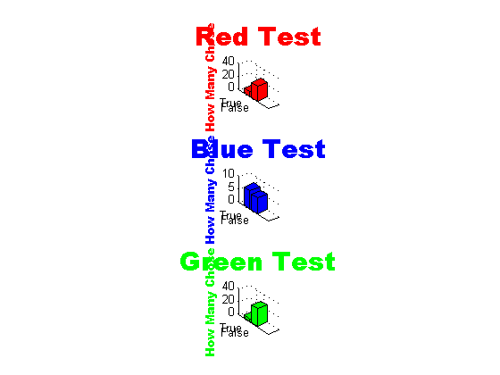

load('testredvar');
redresult = result;
load('testgreenvar');
greenresult = result;
load('testbluevar');
blueresult = result;
tredresult = [];
fredresult= [];
tblueresult = [];
fblueresult = [];
tgreenresult = [];
fgreenresult = [];
for j = 1:(length(redresult));
if redresult(j,4) == 't'
tredresult = [tredresult; redresult(j,:)];
elseif redresult(j,4) == 'f'
fredresult = [fredresult; redresult(j,:)];
end
end
for j = 1:(length(blueresult));
if blueresult(j,4) == 't'
tblueresult = [tblueresult; blueresult(j,:)];
elseif blueresult(j,4) == 'f'
fblueresult = [fblueresult; blueresult(j,:)];
end
end
for j = 1:(length(greenresult));
if greenresult(j,4) == 't'
tgreenresult = [tgreenresult; greenresult(j,:)];
elseif greenresult(j,4) == 'f'
fgreenresult = [fgreenresult; greenresult(j,:)];
end
end
red = [length(tredresult) length(fredresult)];
subplot(3,1,1); bar3(red, 'r'); zlabel('How Many Chose', 'color', 'r', 'fontname', 'arial black'); title('Red Test', 'color', 'r', 'fontname', 'arial black', 'fontsize', 22); set(gca,'YTickLabel', {'True', 'False'} );
blue = [length(tblueresult) length(fblueresult)];
subplot(3,1,2); bar3(blue, 'b'); zlabel('How Many Chose', 'color', 'b', 'fontname', 'arial black'); title('Blue Test', 'color', 'b', 'fontname', 'arial black', 'fontsize', 22); set(gca,'YTickLabel', {'True', 'False'} );
green = [length(tgreenresult) length(fgreenresult)];
subplot(3,1,3); bar3(green, 'g'); zlabel('How Many Chose', 'color', 'g', 'fontname', 'arial black'); title('Green Test', 'color', 'g', 'fontname', 'arial black', 'fontsize', 22); set(gca,'YTickLabel', {'True', 'False'} );
